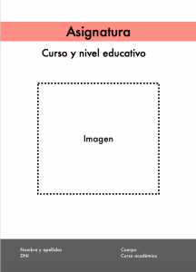

Portada de la Programación Didáctica para Oposiciones
La portada de la programación didáctica en oposiciones es crucial , ya que da la primera impresión antes de la defensa de la programación y la unidad didáctica. Puedes usarla para atraer al lector y destacar entre otro montón de programaciones, así como para acompañar el estilo de tu programación.
Preparar las oposiciones de Secundaria o Magisterio implica muchas tareas, entre ellas, diseñar una portada bonita para la programación didáctica. La función de la portada en una programación de aula es identificar tu documento. Es decir, debe llevar unos datos que permitan al tribunal de oposiciones saber que es tuya, y qué asignatura y curso has elegido.
Datos de la portada de una programación didáctica
La información que se ha de incluir en la cubierta viene especificada en las bases de las oposiciones. Este documento no se publica hasta pocos meses antes de los exámenes, pero tienes la posibilidad de consultar la convocatoria de años anteriores, pues normalmente no cambian mucho. Eso sí, asegúrate de mirar la convocatoria de la comunidad autónoma por la que te vas a presentar, porque aquí sí hay variaciones entre unas y otras. En el caso de que no se especifíque qué datos debes poner, usa el sentido común:
- Nombre y apellidos
- DNI
- Especialidad, asignatura, materia o módulo profesional
- Nivel educativo y curso
- Año académico
- Cuerpo al que pertences o aspiras (Maestros, Secundaria, Técnicos FP, Escuela de Idiomas, Conservatorio…)
Diseño de la portada de una programación didáctica
La mirada del lector se dirige a unos elementos u otros de una imagen dependiendo de su compsición, ¿lo sabías? Es lo primero que debes tener en cuenta al maquetar tu programación para las oposiciones. Esto significa que puedes organizar tu portada didáctica de una manera u otra según lo que quieras mostrar y cómo quieras mostrarlo. Como puedes imaginar, un título más grande llama la atención más que la letra pequeña. Así como unos colores casan mejor con otros. Incluso, a través de los colores, podemos buscar el contraste o la armonía. De la misma manera, se puede jugar con las formas para transmitir dinamismo, suavidad, etc. La composición, lógicamente, depende del nivel, de la asignatura y del estilo del resto de la programación. En la portada de una programación didáctica de Matemáticas, está bien que aparezcan números. En la portada de una programacion didáctica para Educación Física pueden aparecer niños corriendo. O para inglés puedes elegir una frase en este idioma. Usa la imaginación.
Tamaño y tipo de letra
Busca una letra que se lea bien. Sé que hay millones de letras chulísimas, pero recuerda: la portada es la primera impresión que da tu programación docente. Debe ser clara. Y preferentemente, sin serifa.
En cuanto a subrayados y cursiva, es mejor evitarlo. ¿Por qué? Porque no añaden ninguna información adicional y, por tanto, no aportan nada. ¿Negrita? Puede usarse para jerarquizar títulos, por ejemplo, pero tú decides si es necesario o no.
¿Cómo estructuramos entonces los datos de la portada? Debes preguntarte qué es lo más importante. A mi entender, es la asignatura para la que programas, seguido del nivel educativo. Por ejemplo, Matemáticas 2º de Primaria, Biología 4º ESO, Lengua Castellana y Literatura 1º Bachillerato… Por último, ya al mismo tamaño, el resto de datos.
¿Cómo lo ubicamos? Siguiendo esa jerarquía que hemos hecho, colocaremos el título (asignatura y nivel) arriba. Inmediatemente debajo el cuerpo y ya a pie de página el resto de datos. De esta manera, a simple vista se ve claramente para qué especialidad has programado y para qué curso, lo cual contextualiza bien la programación didáctica. En otro golpe de vista, el tribunal ya ve tus datos (nombre, DNI) y el año académico.
Imágenes
Por tanto, tenemos ya ocupada la parte de arriba y de abajo de la portada. ¿Qué habrá en el medio? Una imagen. Bien puedes usar una imagen que ocupe toda la portada o bien una más pequeña para colocar en el centro. Sea cual sea, de nuevo, busca coherencia con el resto de portada y con la programación de aula.
⛔️ Si decides buscar una imagen en Internet, asgúrate de que está libre de derechos de autor. ⛔️
Modelo de portada para programaciones didácticas
Teniendo en cuenta todo lo anterior, el esquema o la maquetación de la portada de una programación didáctica queda así:


¿Que pasa si uso una foto de un cuadro que he visto en internet?. Porque la ley de derechos de autor también dice que puedes usar una imagen si no le creas Ningún perjuicio a autor, tengo entendido.
No es del todo así. Depende de los derechos que tenga la imagen. Cualquier creación, de por sí, tiene derechos de propiedad intelectual. Si no tienes permiso, legalmente no puedes usar la imagen. Si la imagen tiene licencia Creative Commons, la propia licencia te dice cómo puedes usarla. Si la imagen es de dominio público, se puede usar sin problema.
Se podría poner de portada un diseño de Canva?
Sí
¿es grave si en la portada de la programación didáctica hemos puesto nuestro teléfono o email ?
¿Te pueden penalizar por esto?
Gracias
No debería, pero siempre hay que mirar bien la convocatoria y los criterios para poner la información que piden. Realmente, en las oposiciones no es necesario que el tribunal sepa tu número ni tu email.
A la hora de imprimirlo, ¿la portada y en el reverso el índice o la portada y en otra hoja diferente el resto del trabajo?
Gracias,
Mejor la portada en una hoja y el resto a partir de la hoja siguiente.
¡Hola! Ante todo un millón de gracias por los consejos tan útiles que nos das, de corazón. Mi duda es… si en la convocatoria se dice, literalmente, «La portada incluirá los datos de identificación del personal aspirante , el cuerpo y la especialidad», ¿podemos incluir una imagen? Es lo que yo quisiera hacer, pero me surge inquietud al no estar segura de si esa frase quiere decir «exclusivamente estos datos» o, como yo lo entiendo de manera literal, «debe incluir obligatoriamente estos datos». Yo oposito en Andalucía. Mil gracias 🙂
¡Hola! Sí, puedes incluir una imagen. Se refieren a que debes incluir esos datos para que puedan saber que la programación es tuya (y así evaluarla).
Hola, Anabel, en el caso de las Oposiciones de estabilización sólo hay que presentar una Unidad Didáctica, y el espacio es limitado (4 a 8 folios por una cara). ¿La portada se cuenta como una de esas 8 páginas máximas? ¿El índice también? En la convocatoria no dice nada al respecto.
https://www.euskadi.eus/bopv2/datos/2022/12/2205690a.pdf
Hola, Inés! Si no dicen nada, yo me limitaría a 8 páginas en total como máximo.
Muchas gracias, así lo he hecho, la verdad es que está muy mal definido. Quitando dos páginas, hacerlo en 6 caras es realmente muy justo, pero mejor no arriesgarse.
Hola, gracias por tus consejos. Se puede imprimir la tapa en un papel reciclado que es de color cartón? y poner la tapa final también en este tipo de papel?
Gracias
Hola,
me ha surgido una duda que no he visto en ningún lado respondida. Si por ejemplo tu Programación u Unidad que tienes que presentar es en inglés y en la convocatoria aunque ponga elaborarla en inglés, pero no deja claro la portada… debo de escribir mi portada también en inglés?? tipo: «programming, english subject, 5th grade…» No me queda claro.
Gracias!!
Hola, ¿la contraportada en Andalucía es obligatoria al nombrarse en la convocatoria o es opcional? ¿Se refiere a segunda página o a la final? Y por último, ¿se pone pie de página y numeración en ella? Gracias!